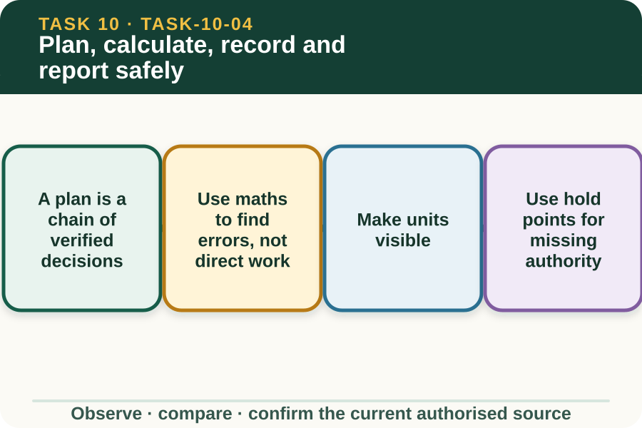

Learning purpose
Rehearse fictional calculations and complete a source-led plan without producing a real application instruction.
Task 10 · Lesson 4 of 4
Rehearse fictional calculations and complete a source-led plan without producing a real application instruction.
Learning purpose
Rehearse fictional calculations and complete a source-led plan without producing a real application instruction.
Success criteria
Learning boundary
Supplementary learning and formative practice only. Current RTO assessment, local procedures and authorised supervision control real work.

A source-led chemical plan identifies the authorised task purpose, exact product source, work area, sensitive surroundings, current information checks, responsibilities, hold points and record destination. It does not rely on remembered details or a generic checklist alone.
For learning, the plan uses fictional identifiers and controlled blanks. Any product-specific field is marked Refer to current label, SDS, local procedure or supervisor rather than filled with generated content.
Routine numeracy can help check whether a supplied fictional plan is internally consistent. Add listed areas, compare subtotals with the stated total, check that units match and identify transposed or missing figures.
This site deliberately does not convert area into a product quantity or generate a product-use figure. When the arithmetic affects a real chemical decision, the learner presents the discrepancy to the supervisor and current controlling sources.
A number without a unit can be misunderstood. Keep metres, square metres, hectares, minutes and counts attached to the value, and do not combine unlike quantities merely because both are numbers.
Show the calculation pathway so another person can check it. If the source dimensions or units are missing, leave the result unresolved rather than supplying a convenient assumption.
A complete-looking form can still be unsafe if product identity, document currency, local area, weather evidence or supervisor approval is missing. Each unresolved controlling field is a hold point, not an invitation to fill the gap from a public website.
The learner marks what is missing, keeps the plan non-operational and asks one precise question. Only the authorised process can release the next workplace stage.
Fictional worked example
Observed evidence: A fictional planning sheet dated 4 April 2027 lists three training zones of 0.8 ha each but shows a total of 2.6 ha. Product fields are intentionally blank and the source card is marked classroom rehearsal only. Decision and reason: Elena identifies that the areas total 2.4 ha and does not use either figure to derive any chemical quantity. Safe action: She preserves the original figures, shows the addition and flags the total for supervisor review. Result: The supervisor confirms a transcription error in the fictional sheet and explains where the real authorised plan would control product-specific information. Next check or record: Elena records the corrected fictional area with the confirmation note and leaves every operational field linked to its authorised source.
Planning and completion records have different purposes. A plan records intended work and approvals; a completion record captures confirmed facts, changes, observations, outcomes and any issue referred through the authorised system.
Never pre-fill a completion record from the plan or invent a value to make the paperwork look finished. If work did not proceed or a field cannot be verified, record the status honestly through the current workplace process.
A clear handover identifies the document set, unresolved items, present task status, person who controls the next decision and where the approved record belongs. It avoids product directions and real personal or property details in the public learning space.
The saved website response is formative rehearsal only. It is not a chemical record, RTO submission or evidence that the learner can undertake the practical task.
Formative practice
Each option explains the consequence. These answers save only on this device.
Written application
Apply and keep a learning record
Use a teacher-supplied non-operational sheet. Mark source links, check one area total, circle missing authority and draft the handover. Do not derive any product quantity or fill any operational field.
Learning record: A supplementary-learning planning audit showing arithmetic, source controls and unresolved hold points.
Lesson responses and the activity are formative learning only. Formal sufficiency and competence remain with the current RTO process.
Next: return to the task hub and follow the teacher-confirmed assessment direction.
Source basis: AHCCHM201 Release 1 planning, source, weather, supervision and record concepts; NESA Chemicals focus-area numeracy and documentation concepts; authorised teacher-posted chemicals notes. No website calculation or plan controls a real chemical task.